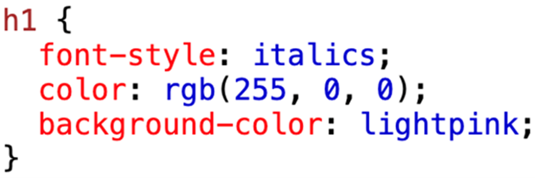
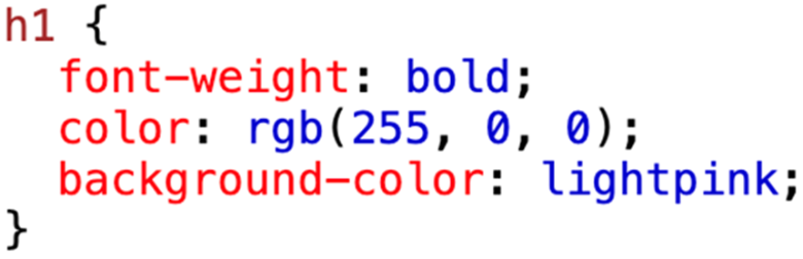
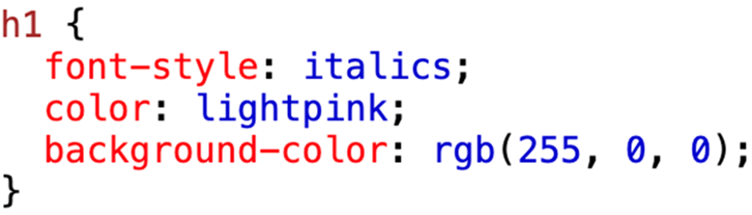
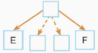

Lý thuyết bài học
Qua bài học này, học sinh sẽ học cách sử dụng CSS để tạo màu cho chữ và nền, giúp trang web trở nên sinh động và hài hòa hơn.Để rõ hơn, các bạn hãy theo dõi bài giảng sau:
Bài tập ôn luyện
Phần trắc nghiệm:
Câu 1: Để định dạng màu khung viền quanh phần tử, em sử dụng thuộc tính CSS nào?A. background-color.
B. bgcolor.
C. color.
D. border.
Câu 2: Mẫu CSS định dạng phần tử h1 có kiểu chữ đậm, màu chữ đỏ và màu nền hồng nhạt là
A. 
B. 
C.

D. 
Câu 3: Cách thiết lập màu tím trong hệ màu RGB là
A. 800080.
B. 808080.
C. 808000.
D. 808000.
Câu 4: Mẫu CSS áp dụng cho các phần tử có quan hệ cha con trực tiếp là
A. div p {background-color: lightblue;}
B. p + em {color: red;}
C. p > strong {color: green;}
D. strong em {color: gray;}
Câu 5: Hệ màu nào sau đây được HTML và CSS hỗ trợ?
A. RYB.
B. HSB.
C. HSL.
D. CMYK.
Câu 6: Phương án nào sau đây là cách thiết lập màu đen trong hệ màu RGB?
A. rgb(100%, 100%, 100%).
B. 808080.
C. rgb(255, 255, 255).
D. rgb(0%, 0%, 0%).
Câu 7: Sơ đồ dưới đây mô tả bộ chọn nào?

A. E F.
B. E F.
C. E > F.
D. E + F.
Câu 8: Thuộc tính nào giúp em tạo hiệu ứng trong suốt cho hình ảnh, phần tử HTML?
A. background-color.
B. opacity.
C. hover.
D. transparence.
Câu 9: Phát biểu nào sau đây đúng?
A. Các thuộc tính định dạng màu chữ, màu nền và màu khung viền của CSS đều có tính kế thừa.
B. Mỗi màu trong hệ màu RGB gồm 3 giá trị từ 0 đến 256.
C. Trong hệ màu HSL, khi độ bão hòa bằng 0% thì màu trở thành xám.
D. Trong hệ màu RGB có 255 màu xám.
Câu 10: Ý nghĩa của bộ chọn E + F là gì?
A. Quan hệ anh em liền kề, F đứng ngay sau E và cùng cha.
B. Quan hệ anh em không liền kề.
C. Quan hệ cha con trực tiếp.
D. Quan hệ con cháu.
Câu 11: Bộ chọn nào áp dụng cho các phần tử F là con/cháu của E?
A. E F.
B. E + F.
C. E F.
D. E > F.
Phần tự luận:
Bài 1: Các màu cơ bản red, yellow, green, blue, magenta, cyan được thể hiện bằng hàm HSL như thế nào?Bài 2: Mỗi giá trị trong hệ màu RGB có thể nhận giá trị nào và tổng số màu có thể tạo ra là bao nhiêu?
Bài 3: Sự khác biệt giữa RGB và HSL trong CSS là gì?
Bài 4:
Câu 1: Ví dụ CSS dùng RGB tạo màu chữ đỏ và nền xanh dương.
Câu 2: Ví dụ CSS dùng HSL tạo màu chữ xanh lá và nền vàng.
Câu 3: Áp dụng CSS căn giữa, đổi màu và cỡ chữ cho h1.
Trả lời:
Trắc nghiệm:
1D 2B 3A 4C 5C 6D 7B 8A 9C 10A
Tự luận:
Bài 1:
Red: HSL(0, 100%, 50%)
Yellow: HSL(60, 100%, 50%)
Green: HSL(120, 100%, 50%)
Blue: HSL(240, 100%, 50%)
Magenta: HSL(300, 100%, 50%)
Cyan: HSL(180, 100%, 50%)
Bài 2:
Mỗi giá trị RGB nhận giá trị từ 0 đến 255, tổng số màu là 16.777.216.
Bài 3:
RGB mô tả màu bằng ba thành phần đỏ, xanh lá, xanh dương; HSL mô tả màu bằng sắc độ, độ bão hòa và độ sáng.
Bài 4:
Câu 1:
p {
color: green;
text-indent: 20px;
}
Câu 2:
p {
color: hsl(120, 100%, 50%);
background-color: hsl(60, 100%, 50%);
}
Câu 3:
h1 {
text-align: center;
color: red;
font-size: 24px;
}
Bài 5:
h1 {
color: red;
}
p {
text-align: left;
text-indent: 2em;
line-height: 1.5;
}